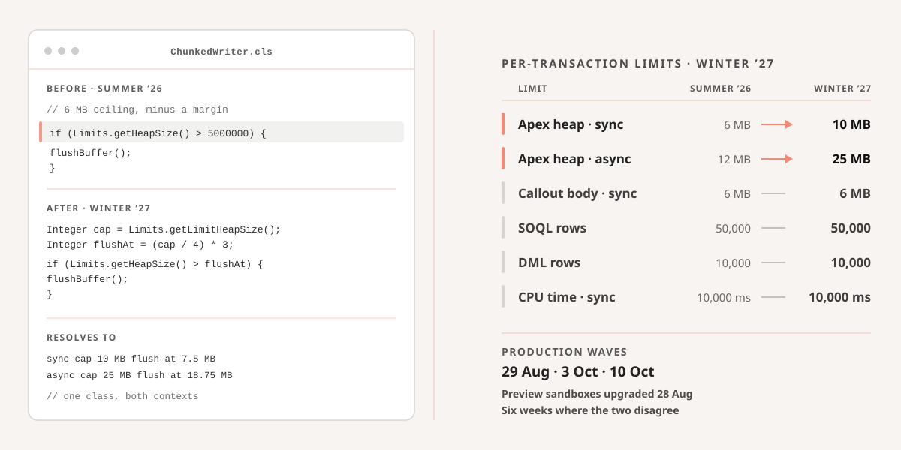

Measured on the live page at 1440 by 1000 and 390 by 844, with computed styles rather than
by eye. Four defects, one omission. Every variation that follows fixes all five; they differ
only in how much structure moves.
01
The column asks for 68 characters and serves 89, and ch is why
max-width: 68ch is the rule, in two places. It does not do what it reads like.
The ch unit is the advance width of the digit zero, and in Geist that is
11.93px against an average prose character of 8.25px, so ch overstates the
measure by about 45%. Ask for 68 and you are asking for roughly 98. On top of that the rule
sits on .record__doc, where ch resolves against the inherited
16px rather than the 17px the paragraphs render at.
In practice neither matters, because the rule never binds: 68ch resolves to 721px and the
grid column is 711px, so the width you actually read is the grid, by ten pixels of
accident. Above roughly 75 characters the eye starts losing its place on the return sweep,
which is felt as tiredness rather than seen as width.
So the fix is not to move the ch rule, it is to stop using ch.
And swapping the unit alone does not fix it, because em on a container
resolves against that container’s own font-size, which is the inherited 16px: exactly the
trap ch was already in. So these mocks set the reading size on
.prose itself and the measure in em beside it. The constraint and
the type now resolve against the same number, 33 of them is 72 real characters, and the
rule stays true if the size is ever retuned.
Asked for 68chDelivered 89 characters, because ch is 45% wider than the average letter
89characters per line 66 to 72 is healthy
02
Paragraphs are packed tighter than their own lines
The gap between paragraphs is 22px while a line of body text occupies 29.2px. The space
that separates two thoughts is therefore smaller than the space inside one of them, so a
seven minute entry reads as a single grey slab. A paragraph break has to be the largest
vertical gap in the run or it is not a break.
22 / 29.2gap against line gap must be the larger
03
On a phone the body text is 14.45px
The root font-size drops to 85% below 1200px, and everything set in rem goes
with it, including the one thing on the page nobody is skimming. Furniture can shrink on a
small screen; the article body is why the reader opened the page.
14.45pxbody, at 390px wide 16 to 17 is readable
04
The right column stops working after 6% of the scroll
The contents rail is 337px tall and sticks inside a 5,363px document. For the remaining
94% of the read, a 459px column, more than a third of the page, is empty. It is the most
valuable idle space on the site: it sits at eye level, it is already ruled, and it is
beside the paragraph the reader is on.
459pxidle for 94% of scroll rail is 337 of 5,363
05
Three frontmatter fields are declared, set, and rendered by nothing
author, authorDesignation and authorPhoto are
declared in content.config.ts and set in the frontmatter of 24 of the 25
entries. A grep across src/ finds them in the schema and in the markdown, and
nowhere else.
This was first written up as a gap to fill. It is not: the entry already states its date
and its length in the filing slip, and a portrait plus a name plus a role plus the same
date again is the same four facts twice, spending 90 vertical pixels between the standfirst
and the picture the entry actually opens on. The finding stands as a measurement and the
decision goes the other way. Drop the fields rather than render them, so the schema
stops promising something the site has decided not to say.
3 fieldsdeclared and set rendered by nothing
What the two obvious references actually do
Medium
Body size
21px
Line height
1.58
Column
680px
Per line
about 70
Author
photo, bio, follow
Notion
Body size
16px
Line height
1.5
Column
708px
Per line
about 85
Author
person property
CloudAlgo today
Body size
17px
Line height
1.72
Column
711px
Per line
89
Author
not rendered
The useful detail is that Medium and Notion land on almost the same column width and on
completely different character counts. Medium sets 21px to reach 70 characters in 680px;
Notion sets 16px and accepts 85 in 708px, because Notion is styling a document you write in
and Medium an article you read. CloudAlgo runs past both, at 89, with Medium's job to do. Closing that gap takes both moves at once: the type goes up to 18px so it reads
like something written to be read, and the measure comes in to 594px so eighteen point type
does not simply buy a longer line.
What neither reference argues for here is a serif. Family is a theme token in this codebase
and the webfont link lives in the head of Base.astro, so a reading face is a
two file change to the whole site, and the comfort it would buy is the comfort the measure
correction already buys. Geist stays.
AType fixed
Today's page with the five findings addressed and nothing else moved. Measure corrected to 68 real characters, paragraph gap raised above the line, body held at 17px on a phone, byline rendered. Two files change and the whole archive lifts. The right column is still idle, which is what B and D take differently.
CloudAlgo
Home / Journal / Salesforce
Apex heap went to 10 MB, and your hardcoded chunk size did not
Winter 27 raises the synchronous Apex heap limit from 6 MB to 10 MB and the asynchronous limit from 12 MB to 25 MB. The interesting part is the limit that did not move.
Sandeep Kumar
Founder, CloudAlgo
31 Aug 2026 7 min read
Filed
31 Aug 2026
Subject
Salesforce
Length
7 minutes
Release
Winter 27
Wave one of Winter 27 went to production on 29 August. If your org was in it, the synchronous Apex heap ceiling moved from 6 MB to 10 MB two days ago, and none of your code knows.
Most orgs were not in wave one. They go on 3 October or 10 October. Sandboxes on the preview instances upgraded on 28 August. So for roughly the next six weeks a lot of teams sit in the position where the sandbox they test in and the org they deploy to enforce different heap limits, and the gap is four megabytes.
The number that did not move is the interesting one
The maximum size of an HTTP callout request or response in Apex is 6 MB synchronous and 12 MB asynchronous. Those figures are not a coincidence. They were set to match the heap limit, because a callout body counts against heap the moment it arrives.
Which meant the documented 6 MB ceiling was, for years, fiction. Pull a 6 MB response in a synchronous context and you had spent the whole heap holding a string you had not looked at yet. JSON.deserializeUntyped on that string needs room for the string and the object graph at the same time, so the practical ceiling was far below the published one.
Your constants are wrong in the safe direction
Large data Apex is full of lines like this one:
if (Limits.getHeapSize() > 5000000) {
flushBuffer();
buffer.clear();
}
We wrote about the same shape of problem in the governor limits that moved in Spring 26, and the lesson repeats. Five megabytes, picked because six was the ceiling and you wanted a margin for the flush itself. On a Winter 27 org that guard fires with almost half the budget unspent. Nothing breaks. You just do twice the DML you need to, in the job that was already the slowest thing in the nightly window.
BSingle column
Medium's answer to finding 04: if the second column cannot earn its width, do not draw one. The entry runs down the middle at 19px, the author is given real presence at the top, the hero art comes up above the text, and the contents sit above the entry where a table of contents is still useful. The furthest departure from the archive's ruled identity.
CloudAlgo
Home / Journal / Salesforce
Apex heap went to 10 MB, and your hardcoded chunk size did not
Winter 27 raises the synchronous Apex heap limit from 6 MB to 10 MB and the asynchronous limit from 12 MB to 25 MB. The interesting part is the limit that did not move.
Sandeep KumarFounder, CloudAlgo. 31 Aug 2026, 7 min read

Per transaction limits, Summer 26 against Winter 27, and the two that did not move.
Wave one of Winter 27 went to production on 29 August. If your org was in it, the synchronous Apex heap ceiling moved from 6 MB to 10 MB two days ago, and none of your code knows.
Most orgs were not in wave one. They go on 3 October or 10 October. Sandboxes on the preview instances upgraded on 28 August. So for roughly the next six weeks a lot of teams sit in the position where the sandbox they test in and the org they deploy to enforce different heap limits, and the gap is four megabytes.
The number that did not move is the interesting one
The maximum size of an HTTP callout request or response in Apex is 6 MB synchronous and 12 MB asynchronous. Those figures are not a coincidence. They were set to match the heap limit, because a callout body counts against heap the moment it arrives.
The documented 6 MB ceiling was, for years, fiction.
Pull a 6 MB response in a synchronous context and you had spent the whole heap holding a string you had not looked at yet. JSON.deserializeUntyped on that string needs room for the string and the object graph at the same time, so the practical ceiling was far below the published one.
Now the body cap is still 6 MB and the heap is 10 MB, which is four megabytes of room to parse in. Asynchronously it is better still: a 12 MB body against a 25 MB heap leaves thirteen megabytes of working space.
CQuiet document
Notion's answer: take the rules off the headings, drop the weights, and let the warnings become blocks instead of bold runs buried in a paragraph. The calmest of the four to read and the easiest to skim. It also gives up almost all of the press room identity, which for a consultancy whose archive is its argument is a real cost.
CloudAlgo
Apex heap went to 10 MB, and your hardcoded chunk size did not
Author
Sandeep Kumar
Published
31 August 2026
Subject
Salesforce
Reading time
7 minutes
Wave one of Winter 27 went to production on 29 August. If your org was in it, the synchronous Apex heap ceiling moved from 6 MB to 10 MB two days ago, and none of your code knows.
Two numbers, and that is the entire change.Synchronous transactions go from 6 MB to 10 MB, asynchronous from 12 MB to 25 MB. No new methods, no new exception type, nothing to opt into.
The number that did not move
The maximum size of an HTTP callout request or response in Apex is 6 MB synchronous and 12 MB asynchronous. Those figures are not a coincidence. They were set to match the heap limit, because a callout body counts against heap the moment it arrives.
Which meant the documented 6 MB ceiling was, for years, fiction. JSON.deserializeUntyped on a 6 MB string needs room for the string and the object graph at the same time.
The six weeks where two orgs disagree.Your preview sandbox upgraded on 28 August and allows 25 MB. A production org in wave three is still on Summer 26 and allows 12 MB. A batch job peaking at 18 MB passes in one and dies in the other, and the diff contains nothing that touches memory.
The two line runbook
Find your production org's upgrade date. Setup, then Company Information, gives you the instance name; the Trust status page gives you the date.
Until production has passed it, tick "Enforce the Summer 26 Apex heap limit" in every sandbox that upgraded ahead of it.
Sandbox refresh timing matters here too, and it catches people. A full copy sandbox refreshed before the production upgrade comes back on the old ceiling; refreshed after, it comes back on the new one.
DWorking rail recommended
The record kept whole, and finding 04 answered by making the column work rather than removing it. The entry opens on its hero plate, as every entry in the archive does, and the headline takes the ember mark every other hero on the site already carries and this page did not. Type corrected as in A, the byline dropped so the standfirst runs straight into the plate, progress drawn on the rule the rail already has using a scroll timeline and no scroll listener, the figures parked under the contents so the numbers stay in view while the argument uses them, and a listen control at the head of the rail with the spoken sentence marked in the text. Every content device the archive uses is set here rather than described: arrow list, numbered runbook, figure, table, video, two kinds of note, inline code, a code block carrying its language and a copy control, and the two kinds of link. The hero and the in-body figure share one asset only because the mock has one to hand.
CloudAlgo
Home / Journal / Salesforce
Apex heap went to 10 MB, and your hardcoded chunk size did not
Winter 27 raises the synchronous Apex heap limit from 6 MB to 10 MB and the asynchronous limit from 12 MB to 25 MB. The interesting part is the limit that did not move.
Filed
31 Aug 2026
Subject
Salesforce
Length
7 minutes
Release
Winter 27
Per transaction limits, Summer 26 against Winter 27. The two that did not move are what the entry is about.
Wave one of Winter 27 went to production on 29 August. If your org was in it, the synchronous Apex heap ceiling moved from 6 MB to 10 MB two days ago, and none of your code knows.
Most orgs were not in wave one. They go on 3 October or 10 October. Sandboxes on the preview instances upgraded on 28 August. So for roughly the next six weeks a lot of teams sit in the position where the sandbox they test in and the org they deploy to enforce different heap limits, and the gap is four megabytes.
The number that did not move is the interesting one
The maximum size of an HTTP callout request or response in Apex is 6 MB synchronous and 12 MB asynchronous. Those figures are not a coincidence. They were set to match the heap limit, because a callout body counts against heap the moment it arrives, and Limits.getHeapSize() counts it whether or not you have parsed it yet.
The documented 6 MB ceiling was, for years, fiction.
Pull a 6 MB response in a synchronous context and you had spent the whole heap holding a string you had not looked at yet. JSON.deserializeUntyped on that string needs room for the string and the object graph at the same time, so the practical ceiling was far below the published one.
Your constants are wrong in the safe direction
Large data Apex is full of lines like this one:
ApexChunkedWriter.cls
if (Limits.getHeapSize() > 5000000) {
flushBuffer();
buffer.clear();
}
We wrote about the same shape of problem in the governor limits that moved in Spring 26, and the lesson repeats. Five megabytes, picked because six was the ceiling and you wanted a margin for the flush itself. On a Winter 27 org that guard fires with almost half the budget unspent. Nothing breaks. You just do twice the DML you need to, in the job that was already the slowest thing in the nightly window.
Limit
Summer 26
Winter 27
Heap, synchronous
6 MB
10 MB
Heap, asynchronous
12 MB
25 MB
Callout body, synchronous
6 MB
6 MB
Callout body, asynchronous
12 MB
12 MB
The six weeks where two orgs disagree
Your preview sandbox upgraded on 28 August and allows 25 MB asynchronously. A production org in wave three is still on Summer 26 and allows 12 MB. A batch job peaking at 18 MB passes in one and dies in the other, and the diff contains nothing that touches memory.
Watch
Check your instance on the Trust status page before you trust a sandbox. A full copy sandbox refreshed before the production upgrade comes back on the old ceiling. Refreshed after, it comes back on the new one. The refresh date, not the org, decides which limit you are testing against.
Three places carry a number that Winter 27 has made wrong, and all three are grep-able:
Chunk guards. Any comparison against Limits.getHeapSize() with a literal near 5,000,000 or 10,000,000.
Batch scope sizes. A scope tuned down to 50 or 100 to stay inside 6 MB is now leaving most of the budget on the floor.
Retry ceilings. Anything that catches a heap exception and halves the batch is now halving from the wrong starting point.
Per transaction limits, Summer 26 against Winter 27, and the two that did not move.
What to do this week
Walkthrough4:12
Finding and retuning the guards in a real org, on a sandbox already upgraded to Winter 27.
The grep that finds all three, across a source tree:
The whole job is two steps, and the first one is the one people skip:
Find your production org’s upgrade date. Setup, then Company Information, gives you the instance name; the Trust status page gives you the date it moves.
Until production has passed that date, tick Enforce the Summer 26 Apex heap limit in every sandbox that upgraded ahead of it, so the sandbox fails the way production would.
After it has passed, drop the guards’ literals and let the job run to the real ceiling. Measure the DML count before and after; that is where the nightly window comes back.
Note
None of this is urgent in the sense that anything breaks. It is urgent in the sense that the window to fix it quietly closes when the first batch job dies in production and somebody has to find out why at two in the morning.